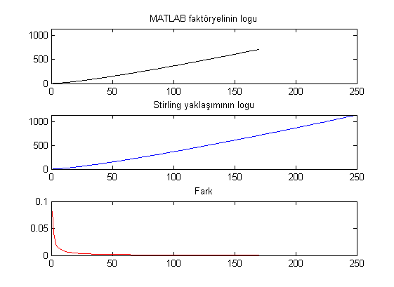

Log hilesi ve Stirling yaklaşımı ile büyük sayıların faktöryelini hesaplama
Faktöryel fonksiyonu çok hızlı büyüyen bir fonksiyon: $n$ çok büyük olmamasına rağmen $n!$ kısa sürede pratik olarak hesaplanamaz duruma gelebiliyor. Örneğin MATLAB'deki factorial fonksiyonu $n\leq 21$ için doğru hesaplanabilirken daha büyük $n$ değerleri için yalnızca ilk 15 basamağa kadar doğru sonuç alınabiliyor.
Bu durumda Stirling yaklaşımı olarak bilinen alttaki formülden yararlanmak düşünülebilir.
$$n! \approx \sqrt{2\pi n} \ n^n e^{-n}$$
Fakat burda da $n^n$ ile üs alımı var ve bu da çok hızlı büyüyen bir fonksiyon. Nümerik işlem yapıyorsak üs almaktan ve çarpma yapmaktan mümkün olduğunca sakınmalıyız. Bu durumda log hilesini kullanmak iyi olacak. Yani işlemleri doğrudan yapmak yerine loglarını alarak yapmak. Bu durumda çarpmalar toplamaya dönüşecek, üsler de çarpmaya dönüşecek ve son durumda elimizde $n$ üslü bir terim olmayacak. Kulağa harika geliyor. Stirling'in log alınmış haline bakalım:
$$log(n!) \approx \frac{1}{2} \log(2\pi n) + n^2 - n$$
Şimdi bunu pratikte sınayalım. Önce fonksiyonu yazalım:
log_factorial_by_stirling_approximation = @(n)(log(2*pi*n)/2 + n.*log(n) - n);
Fonksiyonu anonim bir fonksiyon tutucusu olarak yazdım, isterseniz ayrı bir fonksiyon olarak yazabilirsiniz. $n \log(n)$ çarpımında vektörizasyon kullanıldığına dikkat edin.
Şimdi bu fonksiyonu MATLAB'ın faktöryel fonksiyonu ile karşılaştıralım ve farklarına bakalım:
n = 1:250;
y1 = log(factorial(n));
y2 = log_factorial_by_stirling_approximation(n);
subplot(3,1,1),
plot(n,y1, 'k-'), axis([0 max(n) 0 max(y2)]), title('MATLAB faktöryelinin logu')
subplot(3,1,2),
plot(n,y2, 'b-'), axis([0 max(n) 0 max(y2)]), title('Stirling yaklaşımının logu')
subplot(3,1,3),
plot(n,abs(y1-y2), 'r-'), title('Fark')

Görüldüğü üzere $n$ büyüdükçe yaklaşımdaki fark küçülüyor, yani Stirling yaklaşımı gerçekten de başarılı!
Figürde MATLAB'daki faktöryelin 170lerde çuvalladığı (bu değerler için sonuç Inf çıktığı için çizilmiyor) görülüyor, ama log hilesi ile bunu aşmak mümkün. Dahası yaptığımız log hilesi ile çok çok büyük $n$ değerleri için dahi faktöryel hesaplayabiliyoruz.
Unutmamak gerekir ki bu faktöryel değil, faktöryelin logu. Eğer bu değerleri üstel fonksiyona sokarsak pratikte yine patlar. Ama buna genelde ihtiyacımız olmuyor. Düşünün ki elimizde içinde faktöryel hesaplamamız gereken birkısım yöntem var ve biz en iyisinin hangisi olduğunu arıyoruz. Yani karşılaştırma yapıyoruz. Bizim için önemli olan birinin özel olarak değeri değil, diğerlerinden büyük veya küçük oluşu. log fonksiyonu karşılaştırmayı etkilemiyor, yani $\log(x) > \log(y)$ ise $x > y$ sonucuna varabiliyoruz.
log hilesi sadece faktöryel hesabında değil üs almanın bulunduğu tüm pratik işlemlerde işe yarayabilecek güzel bir araç.
Konuyla ilgili olaraktan şunlar da dikkate değer:


2 yorum
Elinize sağlık İsmail Bey; yazınız öğretici olmuş.
Yanlız daima gördüğüm fakat daha uygulayamadığım bir şey soracaktım;
' @ ' Matlab'ta ne amaçla kullanılıyor? Bu zamana kadar bilinçsizce kullanmıştım sadece..
@ A. Tahir İnce: Teşekkür ederim. Hemen anlatayım: @ işareti "function handle" olarak kullanılıyor. Ben buna fonksiyon tutucu diyorum :) Örneğin
sinbir fonksiyonken@sino fonksiyonun tutucusu oluyor. Bir aralıkta fonksiyonun en küçük değerini bulanfminbndfonksiyonu da girdi olarak bir fonksiyon alıyor. Şöyle yaparak @'in ne işe yaradığını deneyebilirsiniz.Burada
fartıksinfonksiyonu yerine kullanılabiliyor. Geliştirdiğiniz yöntemdeki fonksiyon değişebilir olduğunda (örneğinfminbndöyle bir fonksiyon) fonksiyon tutucu ile çalışmak iyi olabiliyor.Bir diğer durum da anonim fonksiyonlar. Yazıdaki kullanım o aslında.
Sanırım bu kullanımlar çok bilinmiyor. En kısa zamanda bunlarla ilgili daha detaylı bir yazı yazayım en iyisi :)